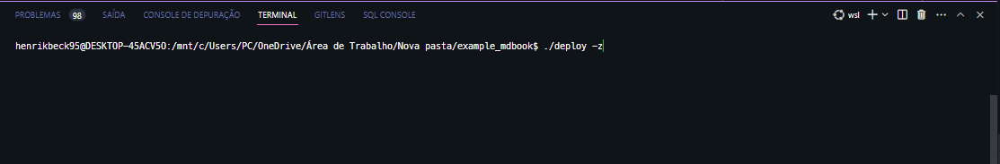
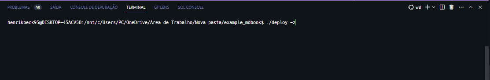

Introduction to mdBook tool
Generating a simple documentation webpage using mdBook tool.
References
-
mdBook tools
-
mdBook themes
-
mdBook related articles
Documentation
Generate a documentation webpage based on Markdown files.
- File structure
- All Markdown files must be at
./src/directory folder path. - Format your
./src/SUMMARY.mdfile according to your needs. - Configure your book using the
./book.tomlfile. - Customize your theme.
- The generated content files are stored at
./dist/directory folder path.
- All Markdown files must be at
Setup
Installation
There is no need to install mdBook tool on your operating system once all required binaries files to generate the documentation was embedded into this project and they were compiled to run in any Linux distribution (including WSL2).
- In example of Visual Studio Code be sure to run the
deploy scriptfrom WSL terminal.
 

Development
-
Generate documentation
$
mdbook build -
The watch command can take a directory as an argument to use as the book's root instead of the current working directory.
$
mdbook watch ./ -
Start the server up
$
mdbook serve ./ -p 8000 -n 127.0.0.1 -
Open directly on browser
$
xdg-open http://localhost:8000 -
The clean command is used to delete the generated book and any other build artifacts.
$
mdbook clean
Publishing
Once the following requirements are attempted, then the generated contents are going to be available at Example mdBook hosted on GitHub Pages.
- Requirements
- Documentation is built.
-
Repository is commited and pushed to branch
main.
Introduction

The "Hello, World!" program is a simple yet iconic piece of source code used to demonstrate the basic syntax of a programming language. The myth surrounding its origin traces back to the early days of computer programming. According to popular belief, the first "Hello, World!" program was written by Brian Kernighan, a computer scientist at Bell Labs, in the early 1970s.
Kernighan, along with Dennis Ritchie, created the C programming language, which quickly gained popularity. As the story goes, Kernighan was working on a tutorial to teach C programming to beginners. He needed a minimalistic program that could be easily understood and executed by novice programmers. In search of a suitable example, he came across an earlier program written by Martin Richards, another computer scientist who had used the phrase "Hello, World!" to test the capabilities of his BCPL programming language. Kernighan decided to adopt the phrase and included it in his tutorial, solidifying its place in programming folklore.
While there is some debate over the exact origins of the "Hello, World!" program, Kernighan's tutorial and its inclusion of the phrase certainly played a significant role in popularizing it. Today, the "Hello, World!" program has become a tradition in the programming community, with developers often using it as their first line of code when learning a new language. It serves as a simple yet powerful introduction to the world of programming and continues to inspire beginners as they embark on their coding journeys.
References
- Kernighan, B. W., & Ritchie, D. M. (1978). The C Programming Language. Prentice Hall.
- Kernighan, B. W. (2000). Programming in C: A Tutorial. Bell Labs.
- Kernighan, B. W. (1989). Why Pascal is Not My Favorite Programming Language. AT&T Bell Laboratories.
Hello World!
Check some source code "hello worlds" programs examples below:
- Bash
#!/usr/bin/bash
echo "Hello, world!"
- C
#include <stdio.h>
int main() {
printf("Hello, world!");
return 0;
}
- C++
#include <iostream>
int main() {
std::cout << "Hello, world!";
return 0;
}
- C#
namespace Greetings {
class Hello {
static void Main(string[] args) {
System.Console.WriteLine("Hello World!");
}
}
}
- Go
package main
import "fmt"
func main() {
fmt.Println("Hello, world!")
}
- Groovy
println "Hello, World!"
- Java
public class Greetings {
public static void main(String[] args) {
System.out.println("Hello, world!");
}
}
- Javascript
console.log("Hello, world!");
- Kotlin
fun main(args : Array<String>) {
println("Hello, world!")
}
- Perl
#!/usr/bin/perl
# Modules used
use strict;
use warnings;
# Print function
print("Hello World\n");
- PHP
<?php
echo "Hello, world!";
?>
- Powershell
Write-Host 'Hello, World!'
- Python
print("Hello, world!")
- Ruby
puts "Hello, world!";
- Rust
fn main() { println!("Hello, world!"); }
- Scala
object Hello {
def main(args: Array[String]) = {
println("Hello, world!")
}
}
- Typescript
console.log("Hello, world!");